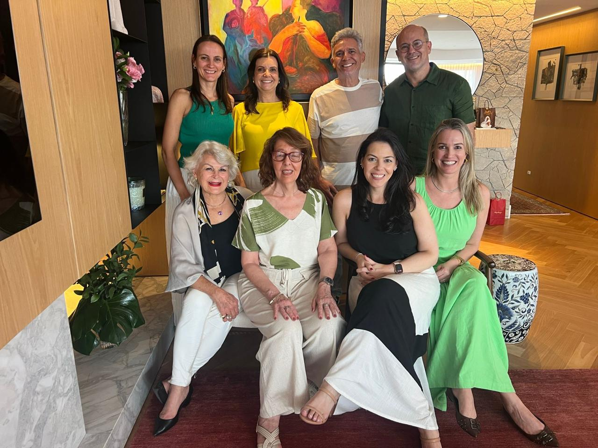

Universo da infância e adolescência em debate no Simpósio e em apresentações de trabalhos da DIA

 Simpósio anual da DIA, no final de agosto, teve como convidado René Roussillon, membro da Sociedade Psicanalítica de Paris
Simpósio anual da DIA, no final de agosto, teve como convidado René Roussillon, membro da Sociedade Psicanalítica de Paris
A Diretoria da Infância e Adolescência (DIA) iniciou o segundo semestre com a atividade intitulada “A função do brincar precoce no acesso à linguagem”. Nesta ocasião, ocorreu a apresentação do trabalho da psicóloga Camila Sabóia, psicanalista e doutora em Psicopatologia e Psicanálise pela Universidade de Paris-VII. Os comentários ficaram a cargo de Cátia Oliver Mello, membro efetivo da SPPA. O encontro seguinte foi uma discussão clínica a partir do relato de Miriam Fontoura Barros, psiquiatra membro graduado da SPPA, que brindou os presentes com o relato de uma supervisão com a Dra. Anne Alvarez. Para a discussão do caso, o evento contou com o comentário de Maria Lucrécia Scherer Zasvaski, membro efetivo e analista didata da SPPA.
O simpósio anual da DIA aconteceu no final de agosto, tendo como convidado René Roussillon, membro da Sociedade Psicanalítica de Paris, professor honorário da Universidade de Lyon 2. Na sua primeira conferência, “O processo arcaico (e seus aprés-coup)", Roussillon ressaltou como é indispensável pontuar as diferenças entre os processos arcaicos, próprios do funcionamento psíquico dos bebês, e o processo infantil, ocorrido em uma criança de 5-6 anos. No entender de Roussillon, o processo arcaico que transcorre bem vai progressivamente tornar uma criança capaz de descobrir a função sujeito, ao passo que as falhas e dificuldades poderão resultar nas diversas formas de apresentações dos sofrimentos narcísicos-identitários.
Já na segunda conferência, “Efeitos dos fracassos do arcaico na adolescência”, Roussilion procurou explanar como o fracasso do arcaico tem relação com aquilo que não foi integrado no processo infantil. O não integrado acaba por se infiltrar no processo adolescente, perturbando-o. Soma-se a isso a complexização causada pela sexualização presente na adolescência, na qual se acrescenta uma mutação fundamental: a capacidade orgástica, a descoberta abrupta de que o corpo tinha uma possibilidade de prazer até então oculta e que se revela na puberdade. A gravidade dos sintomas na psicopatologia da adolescência seriam um indício da existência de traços do arcaico não integrado no quadro clínico. É toda uma relação com o mundo que é transformada, surgindo uma modificação do corpo e também uma modificação de todo o aparelho psíquico. Além das conferências, foram realizadas supervisões com Roussillon e sessões de temas-livres.
Em outubro, o encontro foi com a psicóloga Daniela Centenaro Levandowski, doutora em Psicologia do Desenvolvimento, com Pós-Doutorado em Saúde Mental Perinatal, professora da UFCSPA e coordenadora do NEEDS, que abordou o tema “A Escuta da Perda Perinatal”. Os comentários foram feitos por Ivanosca Ines Martini, psicanalista pela SPPA, que compartilhou sua experiência clínica nestas situações.
A atividade de novembro, “Intersecções entre psicanálise e o teatro infantil: Reflexões sobre o musical Adivinha o que é?”, propôs um debate sobre referido musical, que apresenta a história de uma menina que, às vésperas do seu aniversário, tem um pesadelo no qual se transforma em um botão. Sendo assim, ela decide que nunca mais vai dormir. O texto foi apresentado por Juliana Barros, que tem formação em Artes Cênicas e Comunicação Social pela UFRGS. Cátia Deon Dall’Agno, psicanalista de crianças e adolescentes e membro efetivo da SPPA, comentou a atividade.
No mesmo mês, a quinta científica da DIA abordou o tema da adoção. Alicia Lisondo, psicanalista didata, docente, psicanalista de Crianças e Adolescentes (IPA, SBPCamp e SBPSP), membro fundador do Grupo de Psicanálise de Campinas e co-coordenadora do Grupo de Estudos de Parentalidade e Adoção da SBPSP, apresentou o trabalho “Avatares da adoção: Novos desafios”. A atividade foi coordenada por Nazur Aragonez de Vasconcellos, membro efetivo e atual diretor da DIA.

Denise Steibel, Adriana Pires, Nazur Aragonez de Vasconcellos, Cristiano Frank (de pé), Maria Lucrécia Zavaschi, Suzana Fortes, Carolina Campos e Marina Gastaud (sentadas)